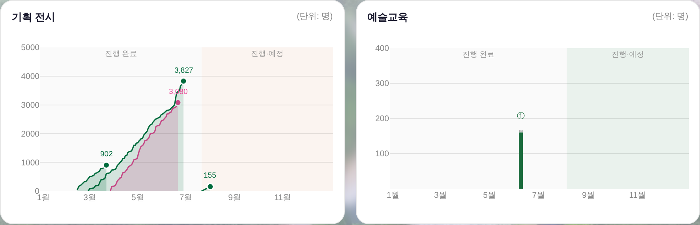
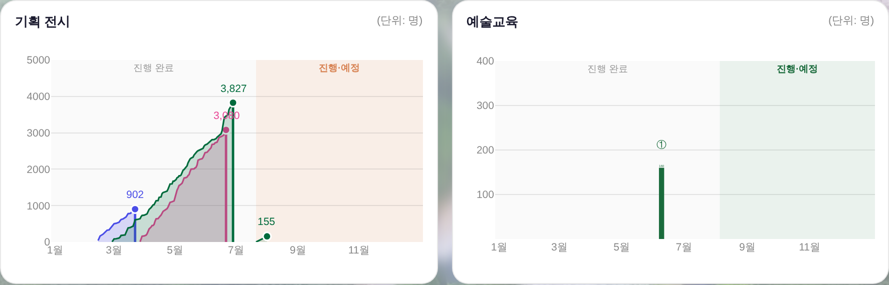
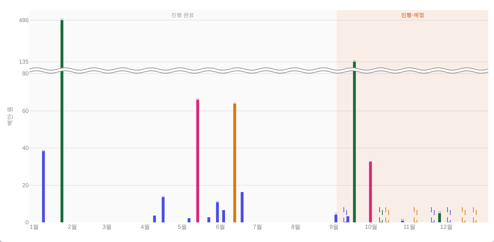
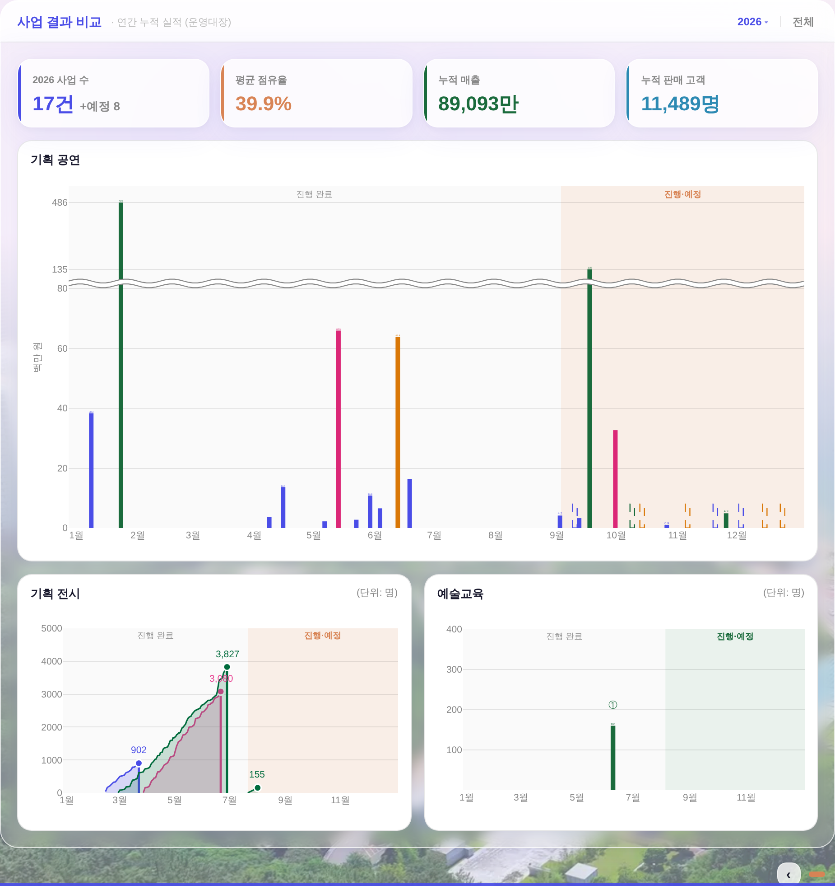

| 곡선 | 항목 | 기간 | 최종 | 색 |
|---|---|---|---|---|
| 짧게 끊기던 것 | 창작스튜디오 7기 입주작가 프리뷰 | 02.13~03.22 | 902명 · 1,656,000원 | 강조색1(파랑)로 변경 |
| 끝까지 이어지는 것 | 어린이미술전 <우리 SUM 타볼래> | 02.27~06.28 | 3,827명 · 19,087,500원 | 7층 초록 유지 |
_BIZ_EX_COL)로 명시하고 사유를 남겼습니다 — 값은 기틀 토큰 이름(--accent)만 씁니다(새 색 0).[피크x, 0] 추가 → 선·채움이 같이 닫힘) + 그 수직 마감을 한 겹 더 진하게(2.4 vs 곡선 1.6). 진행중 전시는 닫지 않습니다 — 아직 절벽이 없기 때문입니다(GS 155 곡선). 그리는 순서도 진행중·예정 먼저 → 종료 나중이라, 겹치는 구간에서 완결된 곡선이 위로 옵니다.--dim(3.32:1 — 화면에서 거의 안 읽혔음) → 10.5px + 그 막대 색. 전시 피크 라벨과 같은 문법이라 숫자와 도형이 한 몸으로 읽힙니다. 단위는 축 제목(백만 원)·카드 우상단(명)이 말합니다. DOM 실측 = fs 10.5px · fill rgb(74,77,231)/rgb(26,107,60)/rgb(219,39,119).
